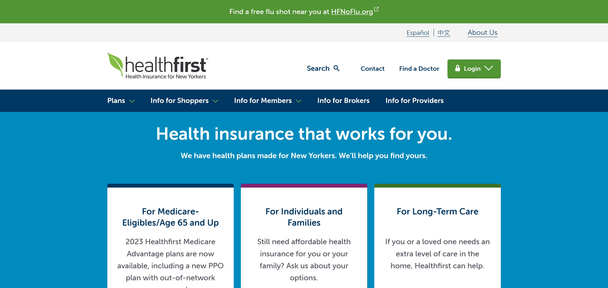
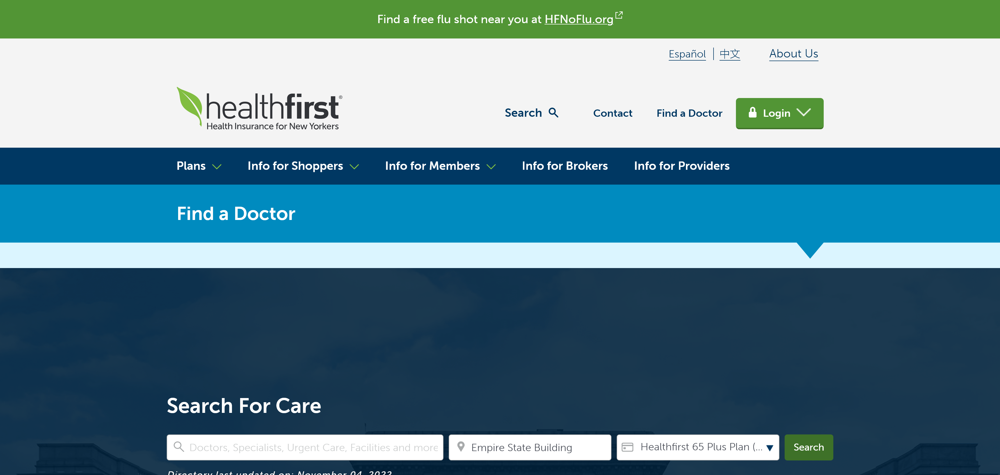
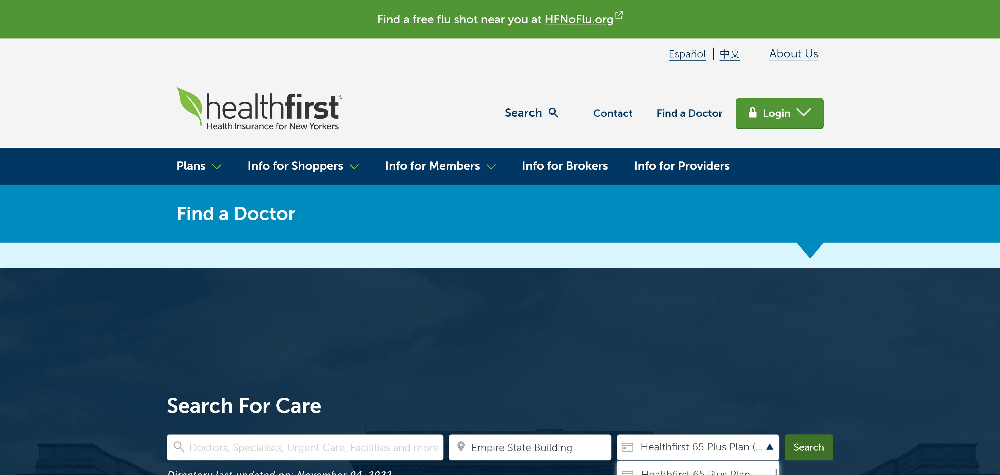
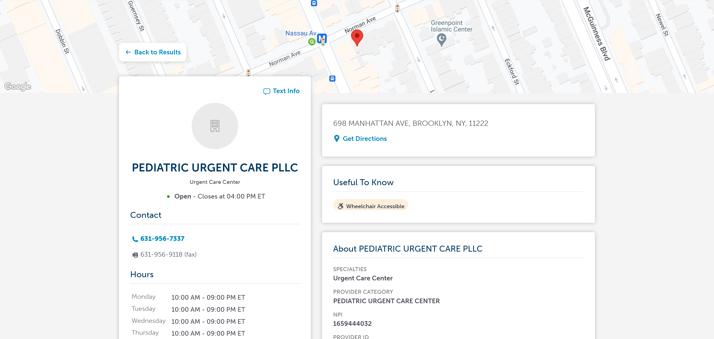
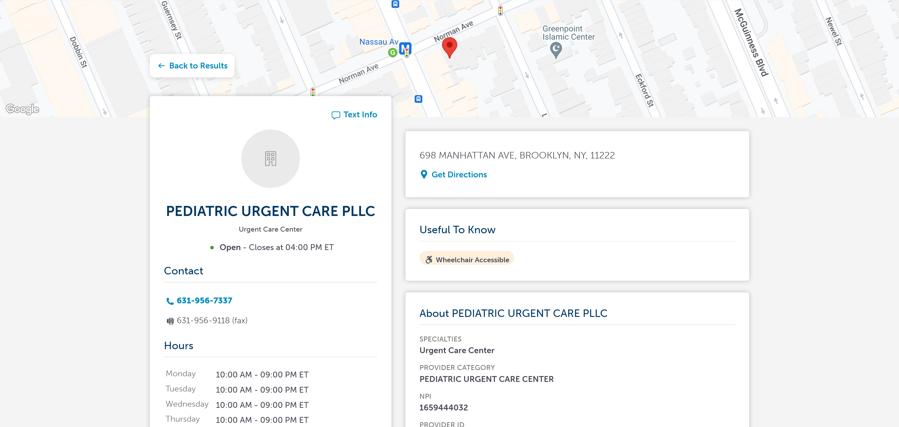

-
Schedule an Appointment to Enroll
2:03:08 PM / 00:01:07:505 Fail
Schedule an Appointment to Enroll
11.06.2022 2:03:08 PM 11.06.2022 2:04:16 PM 00:01:07:505 · #test-id=1FailValidate Schedule PageGiven browser is openstepDefinitions.Hook.addScreenshot(io.cucumber.java.Scenario)When I open the urlStep skippedThen I verify schedule and enroll textStep skippedAnd search representativeStep skippedAnd contact numberStep skippedstepDefinitions.Hook.tearDown()FailSchedule with a representativeGiven browser is openstepDefinitions.Hook.addScreenshot(io.cucumber.java.Scenario)When I open the urlStep skippedAnd when I click medicareStep skippedAnd click search repStep skippedThen verify header is "Sales Representative Search"Step skippedWhen search rep "Luis Villanueva"Step skippedAnd click contactStep skippedThen verify header is "Sales Representative Information"Step skippedWhen I click view scheduleStep skippedThen verify banner is "Schedule an Appointment to Enroll"Step skippedWhen I click telephoneStep skippedAnd choose dateStep skippedAnd choose timeStep skippedAnd I click continueStep skippedThen verify appoinment pageStep skippedstepDefinitions.Hook.tearDown() -
Find a doctor
2:04:16 PM / 00:01:18:456 Fail
Find a doctor
11.06.2022 2:04:16 PM 11.06.2022 2:05:34 PM 00:01:18:456 · #test-id=48FailFind a doctor using zipFailFind a doctor using zipGiven I am on healthfirst homepageBrowser openedstepDefinitions.Hook.addScreenshot(io.cucumber.java.Scenario)imageWhen I click on find a docFind a Doctor was clickedstepDefinitions.Hook.addScreenshot(io.cucumber.java.Scenario)imageAnd I choose HMO in insurance dropdownstepDefinitions.Hook.addScreenshot(io.cucumber.java.Scenario)imageAnd I enter 11218Step skippedAnd click on "Urgent Care Center"Step skippedThen I should be able to click pediatricStep skippedPassFind a doctor using zipGiven I am on healthfirst homepageBrowser openedstepDefinitions.Hook.addScreenshot(io.cucumber.java.Scenario)imageWhen I click on find a docFind a Doctor was clickedstepDefinitions.Hook.addScreenshot(io.cucumber.java.Scenario)imageAnd I choose HMO in insurance dropdownstepDefinitions.Hook.addScreenshot(io.cucumber.java.Scenario)image And I enter 11377***Zip code was provided***stepDefinitions.Hook.addScreenshot(io.cucumber.java.Scenario)image
And I enter 11377***Zip code was provided***stepDefinitions.Hook.addScreenshot(io.cucumber.java.Scenario)image And click on "Urgent Care Center"stepDefinitions.Hook.addScreenshot(io.cucumber.java.Scenario)imageThen I should be able to click pediatricstepDefinitions.Hook.addScreenshot(io.cucumber.java.Scenario)image
And click on "Urgent Care Center"stepDefinitions.Hook.addScreenshot(io.cucumber.java.Scenario)imageThen I should be able to click pediatricstepDefinitions.Hook.addScreenshot(io.cucumber.java.Scenario)image
-
org.openqa.selenium.WebDriverException
2 tests
org.openqa.selenium.WebDriverException
2 failedStatus Timestamp TestName Fail 14:03:09 PM Given browser is open Schedule an Appointment to Enroll.Validate Schedule Page.Given browser is openFail 14:03:17 PM stepDefinitions.Hook.addScreenshot(io.cucumber.java.Scenario) Schedule an Appointment to Enroll.Schedule with a representative.stepDefinitions.Hook.addScreenshot(io.cucumber.java.Scenario) -
java.lang.NullPointerException
2 tests
java.lang.NullPointerException
2 failedStatus Timestamp TestName Fail 14:03:11 PM stepDefinitions.Hook.addScreenshot(io.cucumber.java.Scenario) Schedule an Appointment to Enroll.Validate Schedule Page.stepDefinitions.Hook.addScreenshot(io.cucumber.java.Scenario)Fail 14:03:11 PM stepDefinitions.Hook.tearDown() Schedule an Appointment to Enroll.Validate Schedule Page.stepDefinitions.Hook.tearDown() -
org.openqa.selenium.NoSuchSessionException
1 tests
org.openqa.selenium.NoSuchSessionException
1 failedStatus Timestamp TestName Fail 14:04:16 PM stepDefinitions.Hook.tearDown() Schedule an Appointment to Enroll.Schedule with a representative.stepDefinitions.Hook.tearDown() -
org.openqa.selenium.ElementNotInteractableException
1 tests
org.openqa.selenium.ElementNotInteractableException
1 failedStatus Timestamp TestName Fail 14:04:49 PM And I choose HMO in insurance dropdown Find a doctor.Find a doctor using zip.And I choose HMO in insurance dropdown
Started
Nov 6, 2022 02:03:06 PM
Ended
Nov 6, 2022 02:05:35 PM
Features Passed
0
Features Failed
2
Features
Scenarios
Steps
Timeline
System/Environment
| Name | Value |
|---|---|
| AppName | HealthFirst |
| user | Miraz |
| build | 1.1 |
| os | windows |